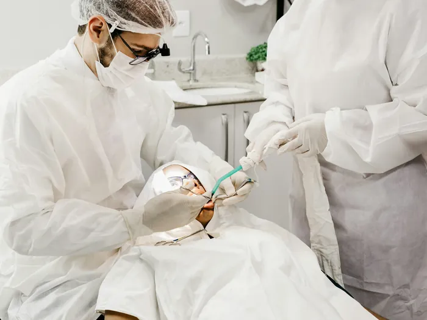
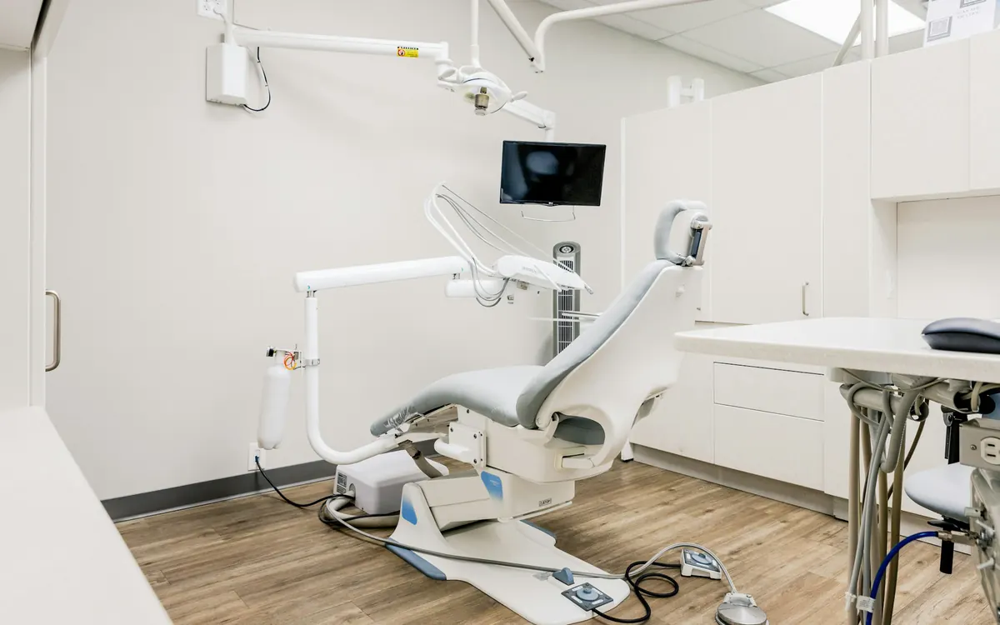
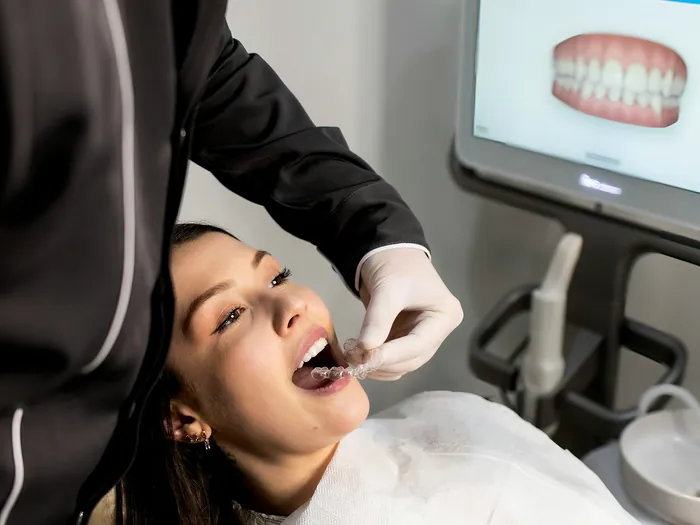
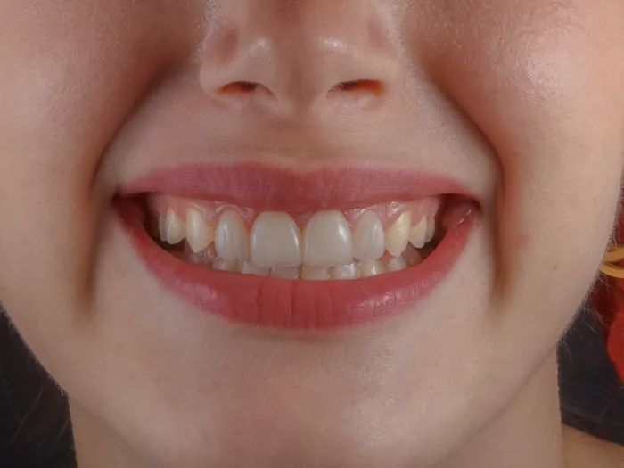
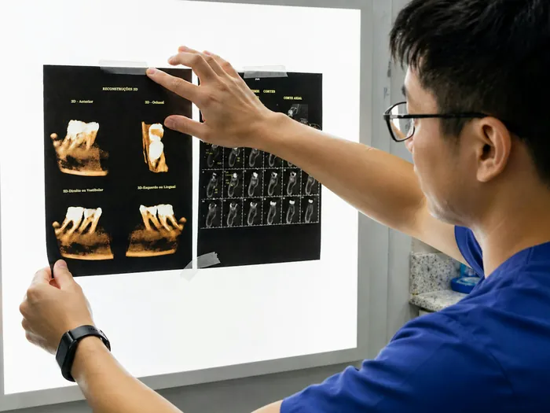
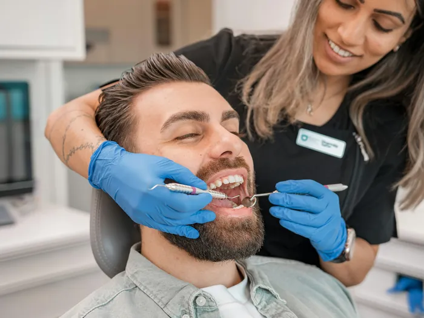
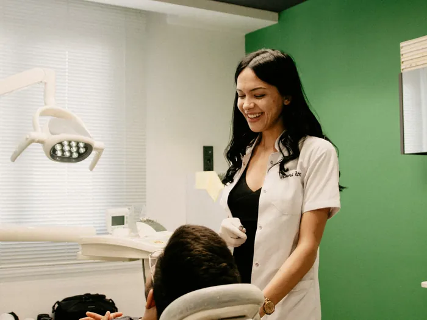
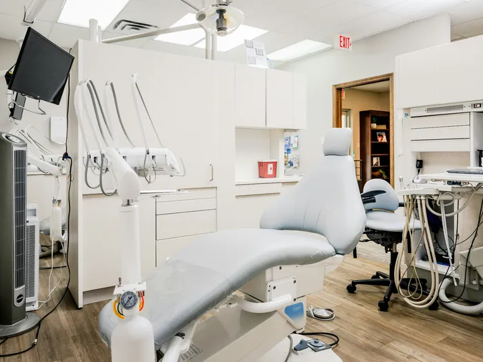
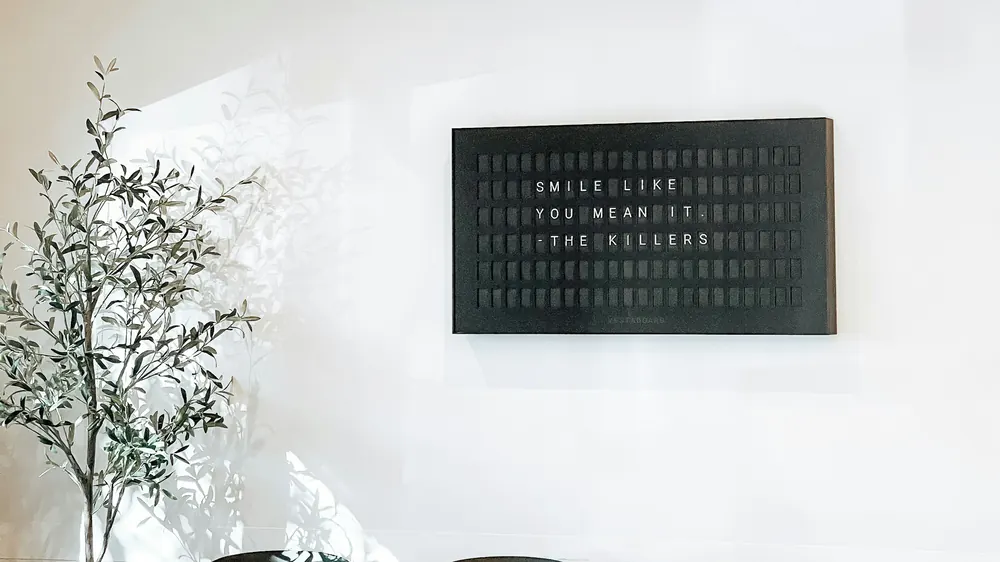

İmplant
Eksik dişin yerine, çene kemiğine yerleştirilen vida ve üzerine yapılan kaplama. Kemik yeterliliğini tomografiyle ölçüyoruz; yetmediğinde greft gerekip gerekmediğini baştan söylüyoruz.
Ortalama 3–6 ayBilgi alın

Ataşehir · 2011’den beri
Muayenede ağzınızı röntgenle birlikte değerlendiriyor, ne yapılması gerektiğini ve neden gerektiğini anlatıyoruz. Tedavi planını ve tutarını yazılı veriyoruz; aynı gün karar vermek zorunda değilsiniz.
Altı başlıkta topluyoruz. Kliniğimizde yapılamayan bir şey gerekirse söylüyor, uzun süredir çalıştığımız meslektaşlarımıza yönlendiriyoruz.

Eksik dişin yerine, çene kemiğine yerleştirilen vida ve üzerine yapılan kaplama. Kemik yeterliliğini tomografiyle ölçüyoruz; yetmediğinde greft gerekip gerekmediğini baştan söylüyoruz.

Çapraşıklık ve kapanış bozuklukları için şeffaf plak veya metal/seramik braket. Hangisinin uygun olduğu vakanın zorluğuna bağlı; şeffaf plak her ağza uymuyor, bunu ölçüden sonra konuşuyoruz.

Zirkonyum kaplama, porselen lamina ve beyazlatma. Sağlam dişi kesmeyi gerektiren işlemleri son seçenek olarak öneriyoruz; çoğu durumda daha az müdahaleyle sonuç alınabiliyor.

Sinire ulaşmış çürük ve iltihaplarda dişi çekmeden kurtarmak için. Çoğu diş tek seansta bitiyor; iltihap varsa iki seansa yayılabiliyor. Lokal anesteziyle ağrısız yapılıyor.

Kanama, çekilme ve ağız kokusunun arkasında çoğunlukla diş taşı ve diş eti iltihabı oluyor. Temizlik ve küretajla başlıyor, evde fırçalama tekniğini birlikte çalışıyoruz.

İlk randevuda hiçbir işlem yapmıyoruz: çocuk koltuğu, aynayı ve sesi tanıyor. Amaç, diş hekiminden korkmadan büyümesi. Süt dişi çürüğü, dolgu, koruyucu vernik ve fissür örtücü.
Muayene ve tedavi planı ücretsiz. Aşağıdaki üç adım, kliniğe ilk gelişinizin tamamı.
“Hastaların çoğu, ne yapılacağını bilmediği için tedirgin geliyor. Röntgeni ekrana açıp birlikte bakınca o tedirginliğin büyük kısmı geçiyor.”

Şikâyetinizi dinliyor, ağzınızın tamamına bakıyoruz. Gerekiyorsa klinikteki dijital röntgeni çekiyoruz; görüntüyü ekranda birlikte inceliyoruz.
Hangi dişe ne yapılacağını, kaç seans süreceğini ve toplam tutarı yazılı veriyoruz. Acil olanla bekleyebilecek olanı ayırıyoruz, hepsini aynı anda yapmak zorunda değilsiniz.
Seansları sizin uygun olduğunuz saatlere yayıyoruz. Tedavi bittikten sonra altı ayda bir kontrole çağırıyoruz; bu kontroller ücretsiz.
İki hekimiz ve tedavinizi baştan sona aynı hekim yürütüyor. Randevu alırken hangi hekimi istediğinizi söyleyebilirsiniz.
Kurucu · diş hekimi
Kliniği 2011’de açtı. İmplant ve estetik diş hekimliğiyle ilgileniyor; protez ve kaplama işlerini de o yürütüyor.
Diş hekimi
Ortodonti ve çocuk diş hekimliğinde çalışıyor. Çocuk randevularını çoğunlukla okul çıkışına, öğleden sonraya veriyor.

Aradığınız cevap burada yoksa arayın ya da WhatsApp’tan yazın. Mesai saatlerinde hekimlerimizden biri yanıtlıyor.
Hayır. İlk muayene, gerekiyorsa röntgen ve tedavi planının çıkarılması ücretsiz. Sonunda tedaviyi bizde yaptırmak zorunda değilsiniz; planı yazılı alıp başka bir hekime de danışabilirsiniz.
Arayın. Ağrılı hastalar için günde birkaç saat boş tutuyoruz; çoğu gün aynı gün içinde yer açabiliyoruz. O randevuda öncelik ağrıyı kesmek oluyor, kalan tedaviyi sonraya planlıyoruz.
Dolgu, kanal tedavisi ve çekim lokal anesteziyle yapılıyor; işlem sırasında ağrı duymuyorsunuz. Anestezi iğnesinin kendisi için önce jel sürüyoruz. İşlemden sonraki gün hafif hassasiyet olabilir, gerekirse ağrı kesici öneriyoruz.
Vidanın kemikle kaynaması genellikle 3–4 ay sürüyor, sonra üst yapı yapılıyor. Kemik yetersizse greft eklenir ve süre uzar. Bu süre boyunca boşluk görünüyorsa geçici bir protez veriyoruz.
Özel bir poliklinik olduğumuz için SGK anlaşmamız yok. Bazı özel sağlık sigortalarıyla anlaşmamız var; poliçenizin diş teminatını kontrol edip söyleyebiliriz. Ödemede nakit, kredi kartı ve havale kabul ediyor, uzun tedavilerde taksit yapabiliyoruz.
İlk süt dişi çıktıktan sonra, en geç iki yaşında. İlk randevuda işlem yapmıyoruz; çocuk koltuğa oturuyor, aleti ve sesi tanıyor. Amacımız, ilerideki randevuların korkulu geçmemesi.
Hekim kontrolünde, doğru yoğunlukta yapıldığında mineye kalıcı zarar vermiyor; birkaç gün süren hassasiyet olağan. Çürük ya da diş eti sorunu varken beyazlatma yapmıyoruz, önce onları tedavi ediyoruz. İnternetten alınan setleri önermiyoruz.
Sağlık alanındaki tanıtım kuralları buna izin vermiyor; ayrıca bu görseller ışık ve açıyla kolayca yanıltıcı hâle geliyor. Bunun yerine muayenede sizde ne beklenebileceğini açıkça konuşuyoruz.
Bilgileriniz 6698 sayılı KVKK kapsamında yalnızca randevu ve tedavi amacıyla işlenir, üçüncü kişilerle paylaşılmaz. Röntgen ve ağız içi görüntüler hasta dosyanızda, mevzuatın öngördüğü süre boyunca saklanır. Ayrıntılar aydınlatma metnimizde.
Randevu için en hızlısı telefon. Formu doldurursanız da aynı gün, en geç ertesi iş günü size dönüyoruz. Binada asansör var, girişte basamak yok.
Adres
Barış Mah. Menekşe Sok. No: 14, Kat 1, Ataşehir / İstanbul
Metro Ataşehir durağı 8 dk · sokak üzerinde ücretsiz park yeri
Çalışma saatleri
| Pazartesi | 09:00 – 19:00 |
|---|---|
| Salı | 09:00 – 19:00 |
| Çarşamba | 09:00 – 19:00 |
| Perşembe | 09:00 – 19:00 |
| Cuma | 09:00 – 19:00 |
| Cumartesi | 09:00 – 14:00 |
| Pazar | Kapalı |